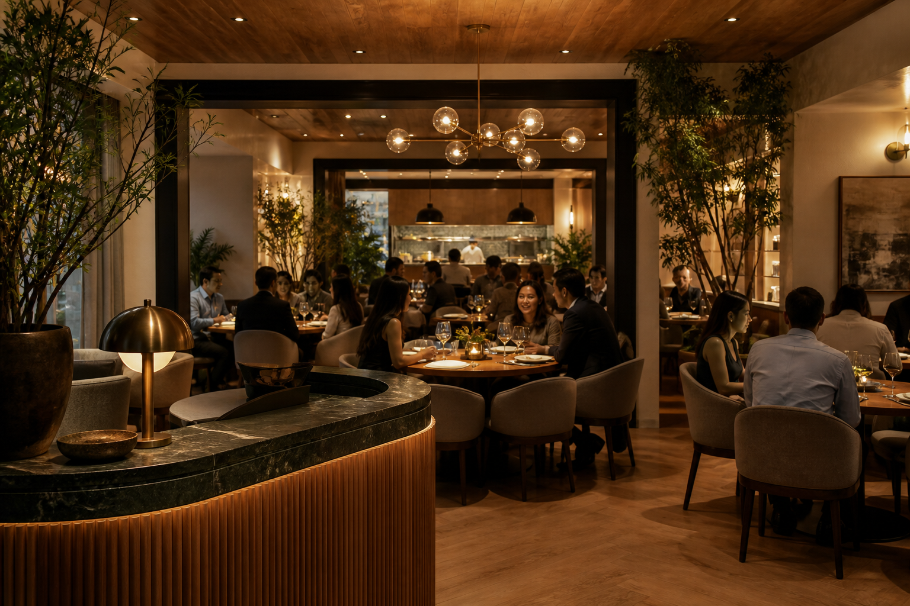
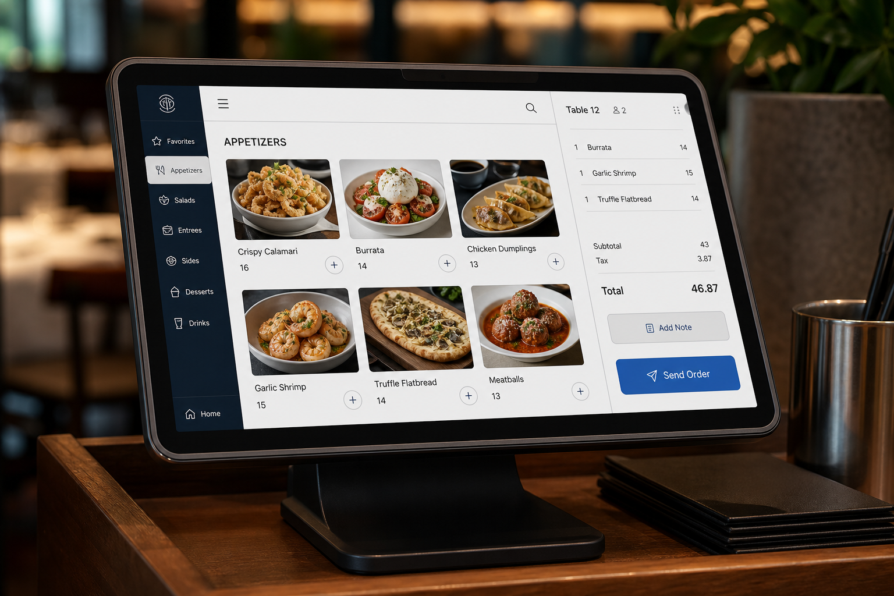

מדריך פנים-ארגוני · לבילדרים
מדריך הבנייה
ל-Vibe Coding
איך להפוך רעיון לאפליקציה פנים-ארגונית עובדת – בלי לדעת לכתוב שורת קוד אחת.
קשת•
הכלים שלנו: Claude Code ו-Cowork
01 · המהפכה
דמוקרטיזציה של שפת הפיתוח
העברת מוקד הפיתוח לאנשים שמבינים את הצרכים העסקיים טוב מכולם.
העבר · צרכנים פסיביים
פיתוח בלעדי של ה-IT
הפיתוח היה שמור למחלקת ה-IT בלבד. עובד שרצה כלי חדש היה ממתין בתור – ומקבל בסוף מוצר גנרי שלא בדיוק ענה על הצורך.
העתיד · בילדרים
מהפכת ה-Vibe Coding
מאפשרת לעובדים ללא רקע בהנדסת תוכנה לפתח כלים ודשבורדים בעצמם. המטרה: להעביר את מוקד הפיתוח אליכם.
המטרה: להעביר את מוקד הפיתוח לאנשים שמבינים את הצרכים העסקיים טוב מכולם — אתם.
02 · מבוא
לפני שמתחילים — התמונה הגדולה
כל אפליקציה בנויה משלושה אזורים. הנה ההקבלה הוויזואלית שתוביל אותנו בכל המדריך.
03 · האנטומיה
האנטומיה של אפליקציה: מסעדת הנתונים
כדי לבקש מ-Claude לבנות אפליקציה, צריך לדעת להסביר לו אילו חלקים אנחנו צריכים. כל מערכת דיגיטלית מתחלקת לשלושה אזורים.

Frontend
חדר האוכל
מה שהלקוח רואה ונוגע בו – החוויה והממשק.
Backend
המטבח והכספת
העיבוד, האבטחה ושמירת המידע מאחורי הקלעים.

API
המלצר
מעביר בקשות בין האזורים ואל מסעדות אחרות.
04 · צד לקוח
חדר האוכל (Frontend)
מרחב החוויה והממשק. כל מה שהמשתמש רואה, לוחץ ופועל מולו.
תפקיד
חוויית המשתמש
כל מה שהמשתמש רואה ולוחץ עליו – כפתורים, גרפים, תפריטים וטפסים.
לוגיקת צד-לקוח
בדיקות מוקדמות
כמו קופאי שבודק אם חסר כסף – ה-Frontend בודק תקינות בסיסית (למשל מייל תקין) כדי לחסוך זמן.
דוגמה בארגון
דשבורד נתונים
דשבורד מרהיב המציג נתוני צפייה ברשת, הכולל כפתורי סינון לפי תאריך וסוגה.
05 · צד שרת
המטבח והכספת (Backend)
מרכז העיבוד, האבטחה והנתונים. אזור סמוי מן העין המבצע לוגיקה עסקית כבדה.
תפקיד
לוגיקה עסקית
מרכז העיבוד, האבטחה והנתונים. לוגיקה כבדה המתרחשת מאחורי הקלעים.
קביעות נתונים
המזווה והכספת
ללא ה-Backend, כל פעולה שהייתם עושים הייתה נמחקת ברגע שסוגרים את הדפדפן.
דוגמה בארגון
חישובים והרשאות
המערכת שמחשבת חריגות תקציב ומוודאת שלמשתמש יש סיווג מתאים לצפות בהן.
06 · ממשק
המלצר האישי (API)
שרשרת האספקה הדיגיטלית. העברת בקשות ותשובות מובנות בין המערכות.
תפקיד
צינור התקשורת
אתם לא צועקים למטבח – המלצר (API) מעביר בקשה מובנית ומחזיר תשובה.
חיבור לעולם החיצון
שירותים חיצוניים
צריכים מפה? שלחו את ה-API למטבח של Google Maps במקום להמציא את הגלגל.
JSON Request →
←
← Response
07 · טבלת השוואה
האנטומיה של האפליקציה: סיכום למפתח
טבלת השוואה מרכזית לכל רכיבי המערכת והתפקידים שלהם.
מושג
אנלוגיה
תפקיד פונקציונלי
דוגמה מעשית מהמשרד
Frontendצד לקוח
חדר אוכל וקופאי
שכבת התקשורת והאינטגרציה מול הלקוח, הנגשת הנתונים וקליטתם
מסך סינון נתוני צפייה חודשיים
Backendצד שרת
מטבח וכספת ארכיון
עיבוד נתונים כבד ושמירת מידע
חישוב חריגות תקציב ואכיפת הרשאות
APIממשק
מלצר · צינור תקשורת
העברת בקשות מהמשתמש לשרת ולהפך
שאיבת נתוני עובדים ממשאבי אנוש לצ'אטבוט
08 · כלכלת מודלים
כלכלת מודלים: בחירת המנוע המתאים לכל משימה
מודל אחד לא מתאים לכל משימה. תתאימו את "כוח הסוס" למשימה שלפניכם.
Haikuהקורקינט
קל, זול ומהיר מאוד
משימות פשוטות, תרגום טקסטים קצרים וקריאה מהירה של יומנים.
מומלץ ל-Vibe Coding
Sonnetסוס העבודה
אופטימלי ומאוזן ביותר
כתיבת קוד, פיתוח אפליקציות אינטראקטיביות וניתוח נתונים מסועפים.
Opusהפרופסור
החכם והעמוק ביותר
תכנון ארכיטקטוני עמוק ופתרון באגים מורכבים במיוחד.
09 · חיבוריות
פרוטוקול MCP: מתאם ה-USB-C של עולם ה-AI
שקע אוניברסלי שמאפשר ל-Claude להתחבר ישירות למערכות הארגוניות בבטחה.
הבעיה בעבר
כדי לחבר בינה מלאכותית למערכת תקציב או מייל, היה צורך לכתוב קוד "מתורגמן" נפרד ומסובך לכל תוכנה.
הפתרון: MCP
שקע אוניברסלי. ה-IT מגדיר פעם אחת, אתם מבקשים מ-Claude למשוך נתונים – והוא מתחבר ישירות.
שרת ה-MCP חושף 3 אבני בניין:
אנו נפתח וננגיש את כלי החיבוריות בהתאם לצרכים שלכם ולאישורי אבטחת המידע. שתפו אותנו כשאתם נתקלים בבקשות שלא קיימות עדיין.
10 · הידע
כיצד מלמדים את Claude להכיר את הארגון שלנו?
שלוש רמות של הנגשת מידע והקשר ארגוני.
1
העתק-הדבק
פתרון מהיר ונקודתי (תרגום אימייל), אך ללא זיכרון ארוך טווח.
2
Projects & Artifacts
סביבת עבודה ייעודית: מעלים מסמכי מדיניות, והמודל שולף מידע בעת הצורך. הארטיפקט משמש כמסמך חי.
3
חיבור חי וישיר
שימוש בקונקטורים (Connectors): המודל ניגש אוטונומית למערכות (למשל Salesforce) ושולף נתונים עדכניים.
רמת ההקשר שתתנו ל-Claude קובעת ישירות את איכות הפלט. ככל שהמידע מובנה ועקבי יותר — התשובות מדויקות יותר.
11 · הפצה
הפצה של פרויקט: מארגז החול לסביבת ייצור
הדרך שבה קוד עובר בבטחה מהניסוי הפרטי שלכם אל כלל העובדים.
שלב 1
סביבה לוקאלית
ארגז החול הפרטי שלכם. תקלות פה לא משפיעות על אף אחד.
←
שלב 2
מסנן ה-CI
אינטגרציה רציפה: הקוד עובר מבחנים אוטומטיים. אם משהו שבור – המסוע עוצר.
←
שלב 3
סביבת ייצור (CD)
מסירה רציפה: המערכת אורזת את האפליקציה ומנפיקה כתובת URL מאובטחת.
תהליך ההפצה דורש מכם מחויבות לתיעוד ואישור מנהלים. אנחנו נעביר את הפרויקט תהליכי בקרת קוד ואבטחה אוטומטיים.
12 · מילון הבילדר
מושגי יסוד שכדאי להכיר
לא חייבים לדעת לכתוב קוד — אבל חייבים להכיר את השפה כדי לתקשר עם Claude ועם ה-IT.
Git & Repository
ה'ספריה' של הפרויקט — כל שינוי בקוד נשמר בהיסטוריה. ה-Repo הוא התיקיה המרכזית שמכילה הכל.
Commit
שמירת שינויים עם הודעה מתארת — כמו Ctrl+S עם הערה בשוליים. מאפשר לחזור לכל גרסה קודמת.
Terminal / Bash
חלון שמאפשר פקודות ישירות למחשב. Claude יכתוב לכם את הפקודות — אתם רק מדביקים ומריצים.
Stack
שכבות הטכנולוגיה של הפרויקט — שפה, מסגרת עבודה, בסיס נתונים. Claude יבחר עבורכם.
API Key & .env file
המפתח לשירות חיצוני. לעולם לא מכניסים לקוד — שומרים בקובץ .env שנשאר פרטי.
Cache
שמירה זמנית של נתונים לגישה מהירה. יכול להיות מקומי, ברשת, או בענן.
כשאתם שואלים את Claude שאלות על הפרויקט — השתמשו בשמות הנכונים. זה מה שמייצר תשובות מדויקות.
13 · תכנון
תכננו נכון: האנטומיה של פרויקט Vibe Coding מוצלח
לא מספיק שזה עובד — זה צריך להיות בנוי נכון מהיסוד.
הגדירו יעד ברור מהיסוד
יעד מדיד, הבנת הארכיטקטורה ורכיבי המערכת — כולל דשבורד עלויות. הגדרה ברורה = פיתוח מהיר ומדויק.
Plan & Review לפני קוד
לפני כל פיצ'ר: תכננו עם קלוד, בקשו ממנו לסקור את הקוד הקיים. כך תמנעו חוב טכני שמצטבר.
אבטחה ותיעוד
סיסמאות ב-.env בלבד, לא בקוד. תעדו כל פיצ'ר ובקשו אישור מנהל. Audit log אוטומטי ב-Claude Enterprise.
הפצה מבוקרת
CI/CD לבדיקות אוטומטיות. בהמשך נוסיף Skills לדיבאג ומעקב — כולל מערכת Audit log ייעודית.
בהמשך נוסיף סקילים שיעזרו לכם לעקוב ולדאבג — כולל מערכת Audit log.
14 · ספר המהלכים
ספר המהלכים: מתיאוריה לעבודה מעשית
שלבי העבודה המומלצים לפיתוח מהיר, בטוח ונכון.
1
כוכב צפון (North Star)
הגדירו יעד מדיד ובינו את הארכיטקטורה ורכיבי המערכת — כולל דשבורד עלויות. הגדרה ברורה = פיתוח מהיר יותר.
2
אפיון ממוקד (PRD-Lite)
מסמך קצר עם 3 פעולות ליבה – הפרידו מהתוספות המיותרות.
3
Plan & Review (לפני שמתחילים לכתוב)
בקשו מקלוד לתכנן ולסקור את הקוד הקיים לפני כל פיצ'ר חדש. זה מונע חוב טכני שמצטבר.
4
פינג-פונג (איטרציות)
העירו לקלוד בשפה טבעית: "הזז ימינה", "הוסף פילטר".
5
ייצוב והפצה
הסתרת סיסמאות ועלייה מסודרת לייצור דרך CI/CD.
גלגל הדיבאגינג הפסיכולוגי
אל תנסו להבין את השגיאה; תנו ל-AI להבין אותה.
1מופיע מסך שגיאה אדום.
2שואלים את ה-AI על מה מדברת השגיאה, מבקשים הסבר ומבקשים לתקן.
3מעתיקים את כל השגיאה לקלוד.
4קלוד מבין ומתקן את הקוד.
5הטמעה – והצלחה.
15 · סיכום
הכוח לפתח נמצא עכשיו בידיים שלכם
הבעלות עוברת אליכם
ארגונים שמצליחים להעביר את הפיתוח לעובדי הקצה זוכים במערכות המדויקות ביותר.
כללי הברזל
סביבת Claude Enterprise שלנו בטוחה ושקופה (Audit Logs). אל תכניסו סיסמאות לקוד.
אל תפחדו
אל תפחדו לנסות ואל תפחדו משגיאות. אתם כבר לא רק צרכנים של תוכנה – היום אתם הופכים לבילדרים.
קשת · פרויקט ה-Vibe Coding הארגוני · הכלים שלנו: Claude Code ו-Cowork